A Gallery of "Useless" Projects
Hi, I'm Cheryl. I often feel torn between following my curiosity and working on something "useful".
A Gallery of "Useless" Projects
Hi, I'm Cheryl. I often feel torn between following my curiosity and working on something "useful".
Unfortunately, A Gallery of "Useless" Projects is currently not optimized for mobile devices :(
For the best experience, please visit my website from a desktop or laptop computer.
Thank you!
Welcome to A Gallery of "Useless" Projects!
Click on objects to explore different projects I've worked on :)
For the best experience, view this site full-screen with volume on.